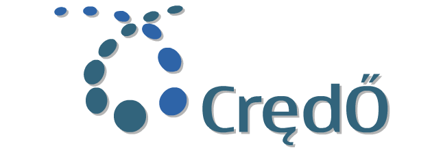

Your browser doesn't support the features required by impress.js, so you are presented with a simplified version of this presentation.
For the best experience please use the latest Chrome, Safari or Firefox browser.

10G/28G SerDes
超高速ADC
同轴通信单芯片解决方案
团队目前的状态
团队职责
4+2 仍在初期阶段
开发速度基本恒定
正努力将大部分代码的测试自动化，实现持续集成，实现进度评估自动化和可视化
部分开发人员有~40%的时间花在技术支持上
1核心项目+3到5个中型项目+N个小项目，未来一些项目会开源
关于我
数字IC设计+嵌入式系统开发+Web开发
热爱开源硬件和开源软件
演讲内容概述
Trello功能简介
我们怎么用Trello
~中间提问环节~
关于敏捷过程和小团队的一些看法
其他经验分享
~最后提问环节~
工具和人的关系
工具是服务于人的
再好的工具也不能解决所有问题
适合自己的才是最好的
分板
需求分析
开发
技术支持
知识库
每日
FAE+SI+Dev 站会
Dev 站会
不定期和异地同事开会
下班前确保当日所有的工作在都在卡上有所体现
每周
公司跨部门会议
报告上周工作
讨论遇到的问题
收集需求
会后
任务优先级排序
讨论本周要做的
不定期
改进流程
±约束
大胆尝试新事物
知识库
Knowledge Base
从Trac到Trello......
换个角度
敏捷软件宣言
个体和互动 高于 流程和工具
工作的软件 高于 详尽的文档
客户合作 高于 合同谈判
响应变化 高于 遵循计划
尽管右项有其价值，我们更重视左项的价值。
导入敏捷
需要有一个推动者和布道者
你的团队和其他部门的接口是什么？消费什么？产出什么？
敏捷过程
(Scrum/Kanban/XP)
唯一不变的只有变化本身
放权 自管理
*Scrum-ban
Trello最大的优点 - 简单
学习成本接近零 - 导入敏捷和培训的代价就小
不带来额外的负担 - 花更多的时间在更有意义的事情上
只提供最基本的东西 - 所以改进流程时的代价就很小
*而且还免费
电子看板相比物理看板
支持远程协作
可搜索可备份
可以使用API来实现自定义功能
关于Trello...还有
实时Web应用
支持大部分移动平台
Markdown!让你更专注于内容本身。还在用MS Word?
做为一个产品给予我们的启示
Trello的缺点
简单的另一面
历史记录回溯
量化统计怎么做?
*什么时候才会有好用的开源替代呢？
谢谢～
感谢开源力量
感谢每天和我们一起奋斗的同事们
特别感谢贾磊